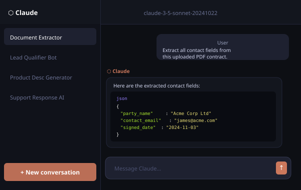

Your business has work only you know how to do. Let AI do it with you.
I build custom AI tools and agents that read your documents, follow your rules and take action — so the knowledge work that eats your week gets done in minutes. Claude is the engine; your process is the blueprint.

The most capable AI model, put to work for your business
Claude Code is Anthropic's developer platform for building with the Claude language model family. Unlike basic chatbots or templated AI tools, Claude can understand nuanced instructions, process documents and images, generate structured outputs, and take multi-step actions autonomously.
I use Claude Code to build tailored AI applications, from intelligent image generation pipelines to document processing systems, customer-facing chatbots, and complex agentic workflows that make decisions and execute tasks without human intervention.
The result: software that adapts to your business logic, handles edge cases intelligently, and delivers consistent quality at scale, without a team of data scientists.
From idea to intelligent system
A clear three-phase process that turns your business need into a working AI application.
Map the opportunity
We identify exactly where AI reasoning can replace manual effort in your workflow. I audit your current process, define inputs and outputs, and determine what Claude needs to know to act reliably on your behalf.
Engineer the application
I design the prompt architecture, build the surrounding application layer (UI, API connections, data pipelines), and configure Claude with your business context, constraints, and success criteria.
Launch and iterate
The application goes live with monitoring in place. I test with real inputs, refine edge-case handling, and remain available to iterate as your needs evolve, or as Claude's capabilities improve.